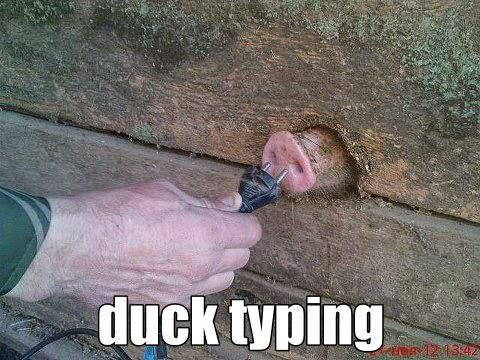

2. Variables⚓︎
2.1 Terminal, console et éditeur de code⚓︎
Un terminal est une invite de commandes permettant à l'homme et à la machine de communiquer de manière interactive.
Pour programmer, il existe deux grands types d'outils :
- la console (aussi appelé interpréteur) permet de réaliser des calculs, des tests rapides ainsi que des programmes courts. On ne sauvegarde pas son travail ;
- l'éditeur de code permet d'écrire un programme complexe dans un langage donné et de sauvegarder son travail. Il est souvent combiné à un interpréteur afin d'exécuter le programme et de le rendre compréhensible par l'ordinateur.
Exemple
- Calculez la somme de 134 et de 5677 dans la console. Pour valider, appuyez sur Enter.
- Faites également leur multiplication à l'aide de l'opérateur
*.
Lancez le script à l'aide de la flèche.
Au fur et à mesure de votre apprentissage, vous utiliserez des éditeurs de code de plus en plus perfectionnés :
- ce site web ;
- Thonny ;
- VSCodium.
2.2 Hello World !⚓︎
Premiers pas
Si votre console contient trop d'éléments, tapez clear pour tout effacer. L'historique sera conservé.
Créons tout de suite notre premier programme1.
Dans la console ci-dessous, tapez : print("Hello world !") et appuyez sur Enter. Que se passe-t-il ?
Dans la console, affichez la phrase "Bonjour le monde !".
Aide
Avez-vous bien utilisé des guillemets comme dans l'exercice précédent ?
Dans la console ci-dessous, réalisez la soustraction de 956 et de 649.
Utilisez l'instruction print pour afficher à nouveau le résultat de cette opération.
Aide
On ne peut pas soustraire un affichage avec print.
Pas de guillemets ici. Voyez-vous quelle est la différence fondamentale entre la soustraction et les phrases des exercices 1 et 2 ?
Important
Vous obtenez le même affichage que vous fassiez 45*4 ou print(45*4).
On aurait pu aussi taper >>> "Hello World !" sans print. Cela fonctionne car la console évalue des expressions Python puis affiche le résultat de l'évaluation.
print sera principalement utilisée pour afficher la valeur référencée par une variable dans des programmes complexes.
2.3 Notion de variable⚓︎
Nous évoquons ci-dessous la notion de variable. Celle-ci sera revue en cours en activité débranchée.
Cours
Une variable représente une zone de stockage dans la mémoire de l'ordinateur. Elle permet donc à l'humain d'accéder à des valeurs numériques, du texte ou des tableaux de nombres stockés dans l'ordinateur à une adresse précise.
Une variable contient une référence (une sorte d'adresse) vers un objet contenant une valeur. Un humain accède à ces valeurs grâce à un nom de variable.
L'instruction x = 2 permet de relier un nom de variable x avec une valeur 2. Le nom de variable x contient donc l'adresse de la valeur entière 2. Ce lien = ne fonctionne que dans un sens : de la droite vers la gauche ou ← .
annee = 2010 # Ligne 1
envol = annee # Ligne 2
annee = annee + 1 # Ligne 3
# Ligne 1 : la variable nommée "annee", est associée à une valeur (ici 2010)
# Ligne 2 : la variable nommée "envol" contient la même adresse que la variable nommée "annee".
# Elle référence donc la même valeur (ici 2010).
# Ligne 3 : On ajoute 1 à la valeur précédemment référencée par la variable nommée "annee".
# Une nouvelle zone mémoire est réservée. "annee" contient une nouvelle adresse,
# associée à la valeur 2011.
Vocabulaire
Une déclaration indique l'existence d'une entité informatique possédant certaines caractéristiques.
Exemple
En Fortran 90, on déclare des variables pi et entier ainsi :
real :: pi
integer :: entier
Pour aller plus loin
Dans de nombreux langages de programmation, la déclaration permet de définir le nombre d'octets à réserver en mémoire, sa représentation interne, l'ensemble des valeurs admissibles et l'ensemble des opérateurs qui peuvent lui être appliqués.
Une initialisation est l'association initiale d'un contenu (une valeur) avec une variable déclarée préalablement.
Exemple
On initialise les variables pi et entier :
pi = 3.141592
entier = 42
Une affectation est l'association d'un contenu (une valeur) avec une variable déjà initialisée.
Exemple
On affecte de nouvelles valeurs aux variables pi et entier :
pi = 6.283184
entier = 42 * 8
Une incrémentation est l'augmentation régulière de la valeur associée à une variable.
Exemple
pi = pi + 2 # la variable pi est reliée à l'ancienne valeur de pi augmentée de 2.
Pour aller plus loin
Ce symbole = n'a rien à voir avec le égal mathématique. a = a + 2 a un sens en Python mais est une proposition logique fausse en Maths.
Cours
En Python, la déclaration et l'initialisation se font en même temps. On appelle cela le typage dynamique.
Lorsque Python voit x = 2 : il comprend qu'un entier arrive et réserve l'espace en mémoire pour stocker cet entier (déclaration); il comprend que la variable nommée x référence la valeur 2 (initialisation).
Pour aller plus loin
En Python, le typage dynamique permet la modification du type référencé par la variable x. Par exemple, x = 'Bonjour' permet de référencer le mot 'Bonjour' plutôt que l'entier 2.
En Python, ces changements de types (passage d'un mot à un entier) se font via le duck typing.
Pour faire simple, le duck typing permet de faire cela :

Créer des variables
- Dans la console ci-dessous, créez une variable entière nommée
mreprésentant la valeur 7. - Affichez ensuite la valeur référencée par cette variable.
- Dans la console ci-dessous, créez une variable réelle nommée
vitesse_initialereprésentant la valeur 12.7 . - Affichez ensuite la valeur référencée par cette variable .
- Dans la console ci-dessous, créez une variable de type mot nommée
3l3mentreprésentant la valeur "Débuter en Python" . - Affichez ensuite cette variable dans la console.
Aide
Une erreur apparait. Il est interdit de commencer des noms de variables avec des chiffres. Renommez-là !
-
Dans la console ci-dessous, créez deux variables entières nommées p et q représentant les valeurs 77 et 5.
-
Affichez d'abord p, puis q dans la console.
-
Comment feriez-vous pour afficher p et q simultanément ?
Astuce
En Python, on peut déclarer et initialiser deux variables (ou plus) simultanément. Pour créer a et b, on ferait : a, b = 4, 5 .
- Dans la console ci-dessous, créez trois variables nommées
nb_passager,vitesse_moyenne_avionetnom_compagniereprésentant les valeurs 237, 977.3, "Air France". - Affichez simultanément les trois valeurs dans la console ci-dessous.
2.4 Nommage⚓︎
Dans les exercices précédents, vous avez du remarquer que les variables :
- ne peuvent pas porter n'importe quel nom ;
- pointent vers différents types de données.
Cours
En Python, le nom d'une variable doit être choisi parmi les lettres de l'alphabet (minuscule et majuscule étant considérées comme différentes), les chiffres et le symbole _.
Les espaces ne sont pas autorisées : on utilisera donc le tiret bas _ (appelé aussi underscore) pour les variables dont le nom est long.
Le nom d'une variable doit être choisi de façon à être facilement compréhensible par un humain (ni trop court, ni trop détaillé).
Pour aller plus loin
Cette convention de nommage s'appelle le snake case et est préconisée pour Python.
On écrira donc nombre_opérations_par_seconde plutôt que NombreOpérationParSeconde.
Vrai/Faux sur le nommage des variables
Cocher les identifiants valides.
-
pas -
Roi -
2ame -
v413t -
dix -
n'œuf -
huit -
Sète -
carte_six -
_5 -
%4 -
quatre-moins-un -
2! -
_
-
pas -
Roi; non conforme au snake case mais valide. -
2ame; interdit de commencer par un chiffre. -
v413t -
dix -
n'œuf; interdit d'utiliser' -
huit -
Sète; non conforme au snake case mais valide. -
carte_six; très bon choix ! -
_5; très mal choisi mais valide. -
%4; interdit d'utiliser% -
quatre-moins-un; interdit d'utiliser- -
2!; interdit d'utiliser! -
_
Choisir des noms de variables
- Dans la console ci-dessous, créez une variable entière représentant le nombre de briques de lait stockées dans un entrepot. On l'initialisera à
10000briques. - Créez à présent une variable réelle représentant le volume total de toutes ces briques de lait. Pour l'initialiser, on considérera qu'une brique contient
0.75L de lait.
Solution
-
nb_briques_laitest le meilleur nom.nombre_briques,nb_briques, oun_briques_laitsont des noms corrects. -
nombrebriques,nBriquesLaitounombre_de_briques_de_lait_dans_entrepotne respectent pas le snake case ou sont trop longs. -
volume_total_laitest le meilleur nom.volume_total_briquesouvol_tot_briquessont corrects.
- Dans la console ci-dessous, créez deux variables entières représentant les coordonnées d'un point A du plan. On initialisera ces variables à
-4et2. - Créez à présent deux variables représentant les coordonnées d'un vecteur \(\vec{u}\) du plan. On initialisera ces variables à
2et-1.
Solution
-
xetysont appropriés s'il n'y a qu'un seul point.x_Aety_Asont également convenables. -
vec_xetvec_ysont appropriés s'il n'y a qu'un seul vecteur.vec_u_xetvec_u_ysont également convenables. Par contre,vecX,VEC_Youabscisse_vecteur_usont à éviter.
Dans la console ci-dessous, créez une variable de type tableau représentant l'ensemble des températures du lac Léman relevées sur 4 jours. On initialisera notre variable grâce au tableau Python [17.7, 18.1, 18.2, 18.8].
Solution
temp_lac ou temp_lac_léman sont appropriés. temp pourrait être correct mais est trop vague et température_lac_léman_4jours est trop long.
2.5 Types de variables⚓︎
Depuis le début du cours, vous avez du remarquer que les variables que l'on manipule ne représentent pas toujours le même objet (des entiers, des mots, des nombres à virgules).
Dans un langage de programmation, les objets référencés par les variables sont typées : ce sont des entiers, des réels, des tableaux etc. Ce type est défini au moment de la déclaration.
Cours
Les types principaux en Python sont :
- les entiers (relatifs) : type
int; - les flottants (approximation des nombres réels par des décimaux) : type
float; - les chaines de caractères (mots ou texte) : type
str; - les booléens (
TrueouFalse) : typebool.
Les booléens sont des variables n'ayant que deux valeurs possibles : Vrai ou Faux.
Pour aller plus loin
Nous aurons rapidement besoin d'autres types permettant de décrire des ensembles de données :
- les n-uplets : type
tuple; - les tableaux : type
list; - les dictionnaires : type
dict.
Exercice 12
En vous aidant des exercices précédents, déterminez les types des variables ci-dessous :
| Types | int | float | str | bool |
|---|---|---|---|---|
p = 8 |
||||
nom = "Von Neumann" |
||||
e = 2.7172 |
||||
p = 8.0 |
||||
huit = "8" |
||||
r = 0 |
||||
r = -120000 |
||||
arrivé = True |
||||
huit = "8.0" |
||||
mort = "False" |
| Types | int | float | str | bool | explication |
|---|---|---|---|---|---|
p = 8 |
|||||
nom = "Von Neumann" |
|||||
e = 2.7172 |
Le séparateur décimal est un point. | ||||
p = 8.0 |
Le séparateur décimal est un point. | ||||
huit = "8" |
Les guillemets indiquent un str. |
||||
r = 0 |
0 est un entier. |
||||
r = -120000 |
r est un entier négatif donc relatif. |
||||
arrivé = True |
True et False sont des mots réservés. |
||||
huit = "8.0" |
Les guillemets indiquent un str. |
||||
mort = "False" |
Pour aller plus loin
Pour connaitre le type référencée par une variable, on utilise l'instruction type(......). Par exemple, type(6100) renvoie <class 'int'>.
Cours
- Les entiers
intse remarquent par l'absence de virgules. Pour les grands nombres, il est possible de séparer les différents chiffres avec un tiret bas :123_456_789correspond au nombre \(123456789\). - Les flottants
floatsont écrits avec un point en guise de virgule :3.1415est le nombre égal à \(3,1415\). -
Les chaines de caractères
strpeuvent être écrites de trois manières :- guillemets simples ou doubles :
'une chaine'ou"de caractères" - guillemets doubles si présence d'un guillemet simple dans la chaine de caractères :
"l'oiseau" - trois guillemets doubles si présence de guillemets simples et doubles dans la chaine de caractères :
"""L'oiseau dit : "tu ne m'auras pas"."""
- guillemets simples ou doubles :
Manipuler des types simples
- Dans le terminal ci-dessous, initialiser les variables
a, b, c, d, e, fà 100; -8; 9,99; 8 290 753 123; Vrai; "Bonjour". - Vérifier vos réponses en affichant la variable et son type dans le terminal.
Exemple :
z = 99
z, type(z)
Voici une discussion entre élèves :
- Bonjour. Que fais-tu?
- Salut, j'apprends Python.
- Pas facile ! Mais Guido a dit : "Ca va être tellement utile".
Dans le terminal ci-dessous, initialiser les variables phrase_1, phrase_2, phrase_3 à ces trois phrases.
Aide
Relisez le cours sur les trois méthodes permettant d'initialiser des chaines de caractères.
On peut convertir un objet d'un certain type en un autre type. Par exemple, on peut convertir une valeur référencée par une variable2:
- en entier en utilisant
int(variable); - en flottant en utilisant
float(variable); - en chaine de caractères en utilisant
str(variable).
x = 1 # Ligne 1
y = float(x) # Ligne 2 : y référence maintenant un str
x = y # Ligne 3
Exercice 15
Sur une feuille de papier, dessiner les deux schémas correspondant aux deux étapes :
x = 3.1415
x = str(x)
À quoi ça sert ?
Le transtypage sera particulièrement important lorsque nous lirons des fichiers externes en mode texte. Toutes leurs données seront en effet considérées comme du texte que nous devrons convertir, au besoin, en données numériques.
2.6 Opérations simples⚓︎
2.6.1 Opérations sur les types numériques⚓︎
Cours
En Python, pour les types int et float :
- les quatre opérations mathématiques de base sont obtenues avec
+, -, *, /; - les puissances sont obtenues avec
**; - les priorités opératoires usuelles sont respectées, l'utilisation des parenthèses
()est possible. Les crochets ou accolades sont interdits !
Les flottants sont plus généraux que les entiers. Ainsi, si on additionne un int avec un float, nous obtiendrons un float. La division donne toujours un float.
Opérations
On pose \(n = 2\).
- Multiplier \(n\) par lui-même 5 fois.
- Multiplier \(n\) par lui-même 10 fois.
- Multiplier \(n\) par lui-même 67 fois.
Solution
>>> n = 2
>>> n*n*n*n*n # n**5
32
>>> n**10
1024
>>> n**67
147573952589676412928
-
On pose \(x = 12.5\). Réaliser le programme de calcul suivant :
-
multiplier \(x\) par 4
- ajouter 10 au résultat
-
diviser le résultat par 6
-
Faites ce calcul en une ligne en utilisant des parenthèses.
Solution
>>> x = 12.5
>>> 4 * x
50
>>> 50 + 10
60
>>> 60 / 6
10.0
(4 * x + 10) / 6.
-
On pose \(p = 3\). On va modifier la valeur référencée par la variable \(p\). Réaliser le programme de calcul suivant :
-
\(p \leftarrow p+3\) (la nouvelle valeur de \(p\) est égale à l'ancienne valeur de \(p\) augmentée de 3)
- \(p \leftarrow p \times 3\) (la nouvelle valeur de \(p\) est égale à l'ancienne valeur de \(p\) multipliée par 3)
-
\(p \leftarrow \dfrac{p}{1.5}\) (la nouvelle valeur de \(p\) est égale à l'ancienne valeur de \(p\) divisée par 1.5)
-
Faites ce calcul en une ligne grâce aux parenthèses.
Solution
Vous devez trouver 12.0.
Dans la variable durée_heure, on donne une durée en heure. Par exemple, durée_heure = 2900.
Écrire les opérations permettant de convertir cette durée en jour et en semaine. On stockera ces durées dans les variables flottantes durée_jour et durée_semaine.
Solution
Vous devez trouver durée_jour = durée_heure / 24 et durée_semaine = durée_heure / 24 / 7.
On choisit deux nombres entiers \(a = 88\) et \(b=12\).
On va calculer le quotient \(q\) et le reste \(r\) de la division euclidienne de \(a\) par \(b\).
On rappelle que le quotient est la partie entière (avant la virgule) de \(\dfrac{a}{b}\) et que \(a = b\times q+r\).
Exemple
\(8/3 \approx 2.66666\) donc le quotient de la division euclidienne de \(8\) par \(3\) vaut 2.
- Calculez \(q \leftarrow \dfrac{a}{b}\)
- Convertissez \(q\) en entier avec
int(...). - À partir de \(a, b, q\), calculez la valeur de \(r\).
Aide
En deux étapes, on fait :
q = a / b
q = int(q)
q = int(a/b).
Solution
q = 7 et r = 4.
On reprend l'exercice précédent mais on souhaite calculer le quotient \(q\) et le reste \(r\) en une seule ligne !
Aide
Pour initialiser plusieurs variables sur une ligne, on utilise var1, var2, var3, ... = 1, 'avion', 3.5, ....
Solution
q, r = int(a/b), a - b*int(a/b).
En informatique, on calcule régulièrement des quotients et des restes. Plutôt que d'utiliser les formules complexes trouvées à l'exercice précédent, on utilise :
a // bpour calculer le quotient d'une division euclidienne ;a % bpour calculer le reste d'une division euclidienne.
Exercice 22
Calculez le quotient et le reste de la division euclidienne de :
9et2;81et3;102et10;21.7et7;21.7et7.3.
Calculez le quotient et le reste de la division euclidienne de :
q, r = 9 // 2, 9 % 2donne :q, r = 4, 1;q, r = 81 // 3, 81 % 3donne :q, r = 27, 0;q, r = 102 // 10, 102 % 10donne :q, r = 10, 2;q, r = 21.7 // 7, 21.7 % 7donne :q, r = 3.0, 0.6999999999999993(Bizarre ce reste...);q, r = 21.7 // 7.3, 21.7 % 7.3donne :q, r = 2.0, 7.1.//et%fonctionnent entre flottants.
2.6.2 Opérations sur les chaines de caractères (mots)⚓︎
Dans un langage humain, le processus d'écriture consiste en l'ajout de mots les uns à la suite des autres.
On peut se répéter en multipliant nos propos.
Cours
En Python, pour le type str :
- l'addition de mots s'obtient avec
+; - la répétition de mots s'obtient avec
*;
Paroles
She's crazy like a fool
What about it Daddy Cool
I'm crazy like a fool
What about it Daddy Cool
Daddy, Daddy Cool
Daddy, Daddy Cool
Daddy, Daddy Cool
Daddy, Daddy Cool
She's crazy like a fool
What about it Daddy Cool
I'm crazy like a fool
What about it Daddy Cool
Daddy, Daddy Cool
Daddy, Daddy Cool
Daddy, Daddy Cool
Daddy, Daddy Cool
Exercice 23
En utilisant le moins de lignes possibles, reproduisez les paroles de cette célèbre chanson.
Une solution possible :
2.6.3 Opérations interdites⚓︎
Certaines opérations sont interdites. L'interpréteur Python va alors vous avertir avec un message d'erreur : il faut apprendre à lire ces messages qui souvent vous expliquent ce qui ne fonctionne pas.
Exemples
>>> 4 + '4'
Traceback (most recent call last):
File "<console>", line 1, in <module>
TypeError: unsupported operand type(s) for +: 'int' and 'str'
+ ne peut être appliqué entre deux opérandes de type int et de type str, ce qui est logique : on n'ajoute que des nombres entre eux ou que des mots entre eux. Pas de mélange !
>>> 'Coucou' * 1.2
Traceback (most recent call last):
File "<console>", line 1, in <module>
TypeError: cannot multiply sequence by non-int of type 'float'
str ne peut pas être multiplié par un float (un non-int.), ce qui est logique : la multiplication est la répétition de mots.
Exercice 24
Expliquez l'erreur que vous obtenez quand vous tapez :
"4" - 2;"Allo ?"**10;"8"*10 / 2.
Exercice 25
Essayez de prédire le résultat de chacune des instructions suivantes, puis vérifiez-le dans la console :
| Expression | Résultat 1 | Résultat 2 | Résultat 3 | Résultat 4 |
|---|---|---|---|---|
(1 + 3) * 4 |
|
|
|
|
5 / 2 |
|
|
|
|
"Six" + 3 |
|
|
|
|
'adf' + 'bce' |
|
|
|
|
("La" + "Li") * 3 |
|
|
|
|
70 / 7 + 1 |
|
|
|
|
"(1 + 3)" * 2 |
|
|
|
|
"Ba" * 4 / 2 |
|
|
|
|
"Ba" * (4 / 2) |
|
|
|
|
89 % 2 |
|
|
|
|
Utilisez le cours et la console pour comprendre la correction ci-dessous.
| Expression | Résultat 1 | Résultat 2 | Résultat 3 | Résultat 4 |
|---|---|---|---|---|
(1 + 3) * 4 |
|
|
|
|
5 / 2 |
|
|
|
|
"Six" + 3 |
|
|
|
|
'adf' + 'bce' |
|
|
|
|
("La" + "Li") * 3 |
|
|
|
|
70 / 7 + 1 |
|
|
|
|
"(1 + 3)" * 2 |
|
|
|
|
"Ba" * 4 / 2 |
|
|
|
|
"Ba" * (4 / 2) |
|
|
|
|
89 % 2 |
|
|
|
|
2.7 Résumé⚓︎
Résumé
Dans ce chapitre, j'ai appris :
- ce qu'est une variable (nom, valeur)
- comment nommer une variable correctement (snake_case)
- qu'une variable est typée (
int, float, bool, str) - qu'on ne peut pas effectuer n'importe quelle opération sur n'importe quel type de variable
- à comprendre (un peu) les messages d'erreur